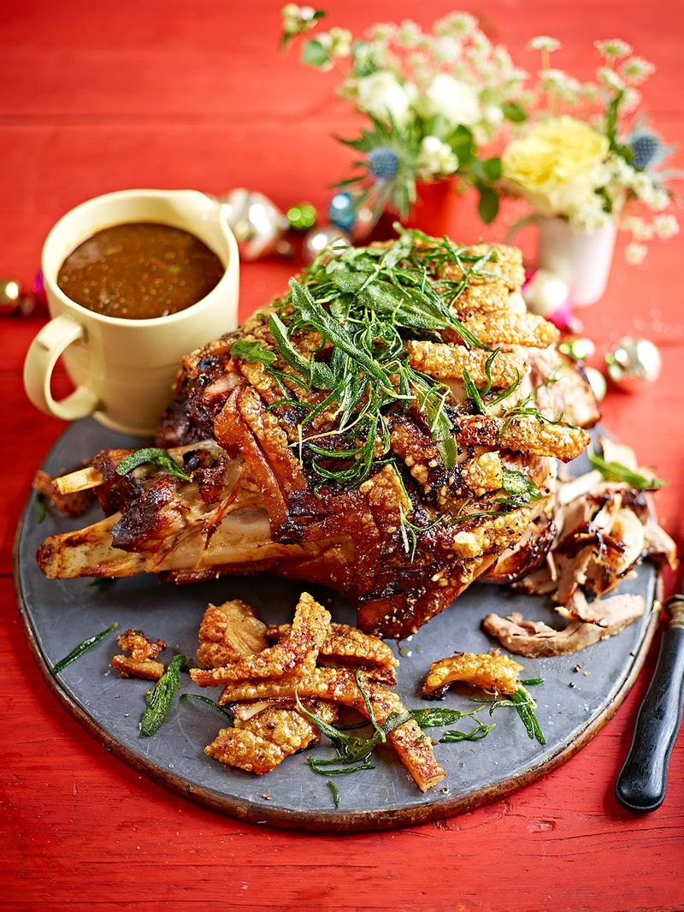

Home
Roast Pork Leg

Source: image from Jamie Oliver.
Description
This underrated cut makes a brilliant centrepiece, and is slow-cooked for perfect crackling. Plus, any leftovers make for epic sarnies.
Source: Jamie Oliver
Ingredients
- 1 x 3kg higher-welfare leg of pork.
- 2 tablespoons coriander seeds.
- 1 tablespoon white peppercorns.
- 6 fresh bay leaves.
- extra virgin olive oil.
- 6 onions.
- ½ a bunch of fresh sage.
- ½ a bunch of fresh rosemary.
- 30 g plain flour.
- 1 big bunch of fresh flat-leaf parsley.
- 1-2 tablespoons mustard.
Source: Jamie Oliver
Steps
- Preheat the oven to full whack.
- Score the pork leg with a sharp knife in a zig-zag pattern.
- Bash the coriander seeds, peppercorns and 2 teaspoons of sea salt until fine in a pestle and mortar. Add the bay leaves and bash again, then muddle in a lug of oil to form a loose paste.
- Rub the paste all over the pork, making sure you get it into all the nooks and crannies.
- Peel and halve the onions, scatter into a large roasting tray and place the scored pork on top.
- Roast for 35 to 40 minutes, or until you have a lovely crisp crackling, then turn the oven down to 170°C/325ºF/gas 3. Slow-cook the leg for 3.5 hours, or until the meat is easily pulled apart.
- When the time's up, pick and dress the sage and rosemary leaves with oil and scatter them over the pork. Pop it back into the oven and cook until the herbs are crispy.
- Remove the leg to board, cover with tin foil and allow to rest while you make the gravy.
- Place the roasting tray on the hob over a medium heat, add the flour and stir it into the juices so you get a sticky paste. Slowly add a little water until you have a lovely rich sauce.
- Pour the contents of the tray into a jug or bowl and blitz to a sauce with a stick blender. Return to the pan, pick, finely chop and add the parsley, along with the mustard and stir well. Season to perfection
- Serve the roast pork with the sauce.
Source: Jamie Oliver
Top